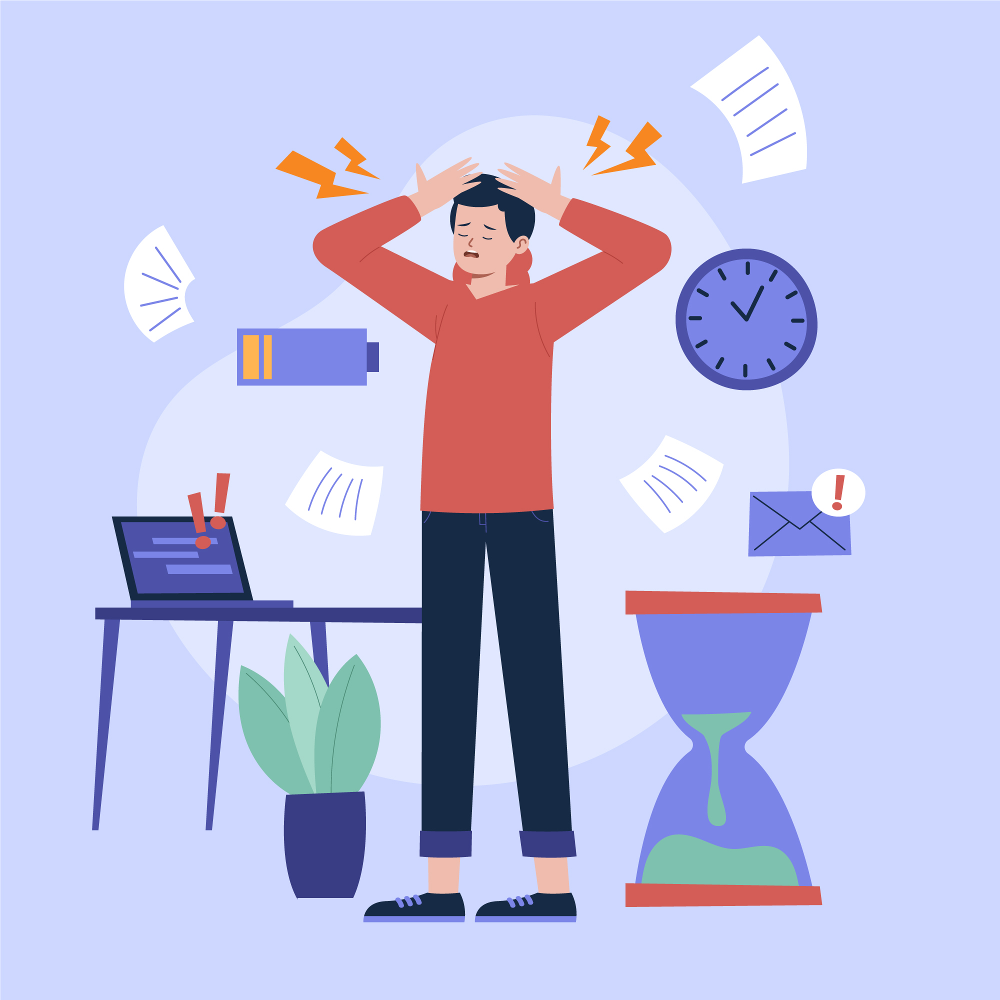
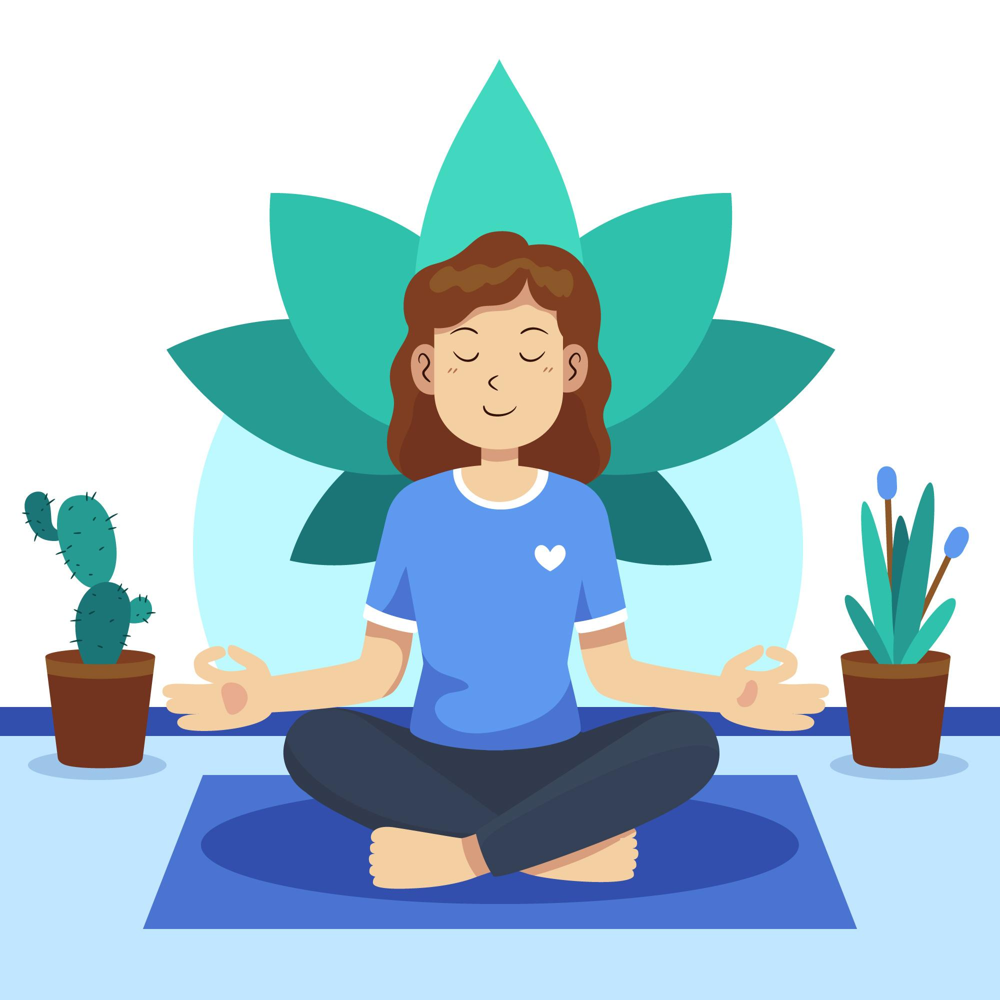
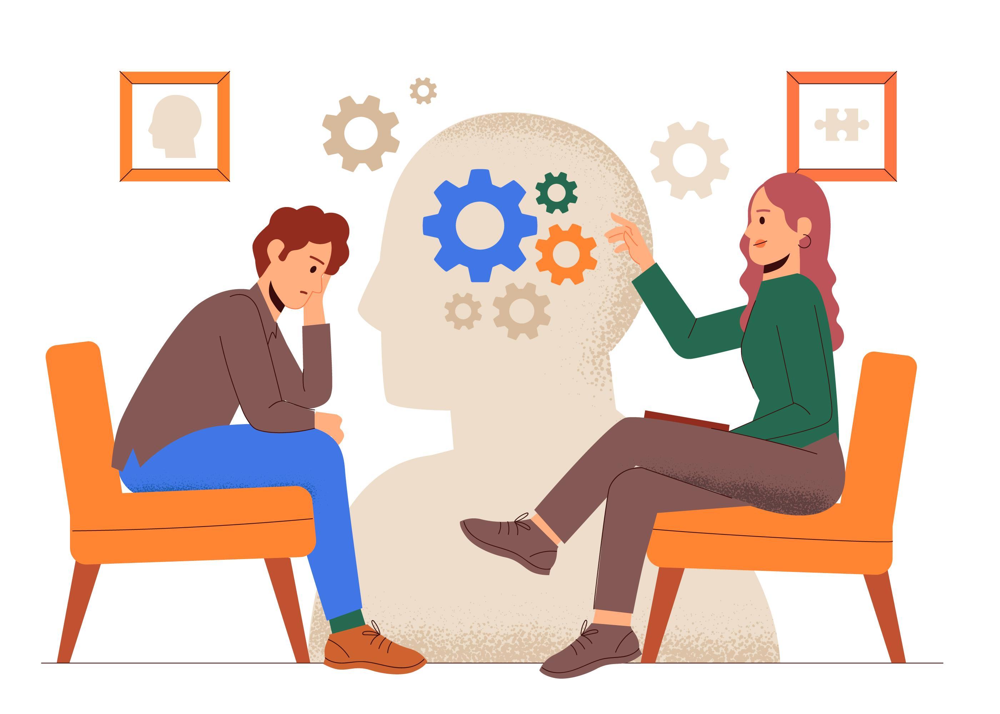
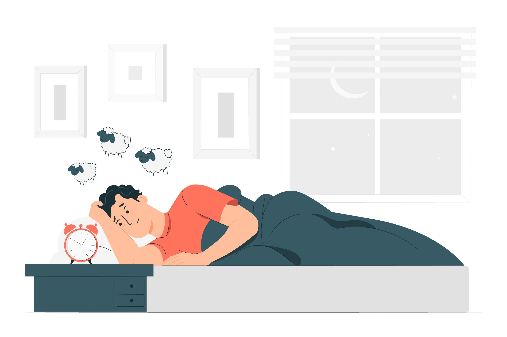

Stress is something everyone experiences, and it is your emotional and physical response to challenging or new situations. You may experience it when you are working with things such as work, school, illness, or relationship problems. It is natural to feel stress as a working mechanism and can give us a positive sense of our problem solving ability. However, if the stress is ongoing,it has the potential to bring about worsening health problems.
Stress may result in the following,
Learning to cope in a healthy way can lower your stress. You can make big changes in your life to manage stress by changing things slowly. Everyone handles stress differently. You can discover and manage what stresses you and the appropriate combination of healthy ways that work best for you.
Step away from the news and social media. It's plesant to be informed, but continuous news of bad things happening will unsettle you.
Relax for a bit.
Practice gratitude every day. Think about some of the things you are grateful for and write them down.Connect with people.Talk about yor concerns and your feelings with the people you can trust. Engage with your community or faith based organizations.

Meditation has existed for many thousand years, and the majority of meditations find their origins back to Eastern cultures. "Meditation" is an umbrella term that encompasses a variety of practices that integrate body and mind and are done with the aim to calm the the mind and improve overall well-being. Some meditations involve maintaining mental focus on some particular feeling, such as breathing, a sound, a visual picture, or a mantra, a repeated word or phrase. Other meditations involve cultivating mindfulness, which is maintaining attention or awareness on the here and now without judgment.
Courses to learn to meditate or be mindful can combine the practices with others. Mindfulness based stress reduction, for example, is a type of course to learn mindful meditation but but includes discussion groups and other approaches to allow the learner to apply what they have learned under stress. Mindfulness-based cognitive therapy combines the mindfulness practices with cognitive behavior therapy components.

Mental health includes emotional, psychological, and social wellbeing. It's not just the absence of mental illness mental health is important to your overall wellbeing and quality of life. Selfcare can help maintain your mental health and assist your treatment and and recovery if you become mentally ill.
Selfcare is taking the time to do the things that enable you to live well and improve your physical and mental health. It can assist you in controlling your stress, lowering the risk of illness, and increasing energy. Every small step of selfcare daily will make a big difference.
Some self-care suggestions are as follows,

We sleep for approximately a third of our lives. Sleep is an essential and involuntary function, without which we cannot function effectively. It is as essential to our bodis as food, water and oxygen, and is required for sound mental and physical health. Sleep restores and repairs our brains, and our bodies.
We can process information, solidify memory, and perform a range of maintenance operations to allow us to function during the day. Sleep is crucial to the health of British citizens and to the UK public's health.
We need to make sure we get the right amount of sleep, and enough good quality sleep. There is no one amount of sleep that everyone will fall into, some need to sleep more than others. Sleeping ability is controlled by how sleepy we are and our sleeping rhythm. How sleepy we are is is linked with our sleep need. The sleeping rhythm is linked with sleep regularity and timing of our sleeping habit; if we have fallen into the habit of sleeping at the same times then we will be more likely to get into the habit, and can sleep at that time each day.
